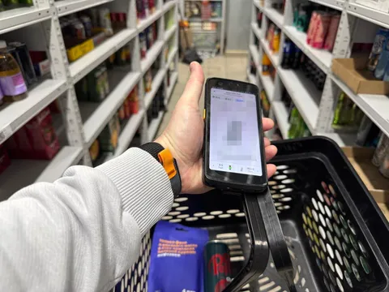

Если вы делаете продукт, у которого есть пользователи, вы просто обязаны быть одним из них. Иначе как вы сможете убедиться, что делаете не фигню? Но как быть, если ваши пользователи - не конечные консьюмеры, а другие участники процесса - курьеры, кладовщики, саппорт? Конечно же, ходить "в поля". Когда я работал в Еде, я раза 4 ходил курьерить, потому что занимался логистикой. А еще дважды ездил в контактный центр посидеть на линии саппорта, ибо другая моя команда занималась инструментами подержки. Сейчас, с переходом в операционный продукт Лавки, обилие новых участников процесса, пользующихся продуктами моей команды, и сложность физического мира точно заставляют проверить все это на своей шкуре.
Буду вам понемногу рассказывать, что такое Лавка изнутри. Клиентский продукт видели все, кто живет в одном из пары десятков городов нашего присутствия. Но что же скрыто под капотом - выясняю сам и рассказываю вам. На прошлой неделе я сходил поработать кладовщиком на даркстор.
Даркстор - это небольшой склад, с которого продукты доставляются непосредственно вам. Эти сторы - на то и дарк, что скрыты от глаз стороннего наблюдателя. Хотя внутри, на самом деле, светло. Их адреса хоть и не афишируются (вам не нужно знать, где они), большой тайной не являются - их нетрудно обнаружить по скоплению голубых курьерских велосипедов рядом с ними. А рядом с некоторыми еще гнездятся роверы - роботы-доставщики, развозящие заказы в нескольких районах. Дарксторов у нас сотни, из них >100 - в Москве. Каждый обслуживает район в несколько км2 - чтобы от склада до любой точки было несколько минут езды на эл.вело - нам нужно держать срок доставки в пределах 15-20 минут с учетом сборки.
Площадь даркстора невелика - в районе пары сотен м2. Зависит от доступных площадей - что удалось найти и снять. Потому и планировочные решения порой удивляют. И на этой небольшой площади с черт-знает-какой планировкой нужно уместить стеллажи на несколько тысяч sku ассортимента, несколько холодильных комнат, морозилку, а иногда и кухню. Про кухню и ИТ-инфру расскажу еще потом отдельно.
А пока представим себе, что кладовщик - партнер сервиса - пришел на смену. Например, я. Основной рабочий инструмент кладовщика - ТСД (терминал сбора данных). Он напоминает толстый смартфон со сканером штрих-кодов, на котором крутится приложение, разрабатываемое моей командой - Полка. Эргономика самого ТСД и приложения должна быть выверена максимально - счет времени сборки 1 позиции измеряется секундами. Вот я залогинился в свой ТСД, который мне выдали с зарядки, и на экране уже первые заказы.
Беру в работу 2й. Потому что 1й - с доставкой ровером, и надо будет выходить на улицу, чтобы положить его в отсек робота-доставщика. Это пусть делает Серега, с которым мы пошли в поля, он еще в куртке. Заказ в работе, и я уже вижу на экране первый товар. Указан № стеллажа, № полки, наименование sku, товарная фотография. Иду по указанным координатам и сразу вижу нужный товар - роллтон с курицей.
Почти на каждой полке лежит несколько разных товаров. Как не перепутать, что именно взять с полки? Выручает принцип не-соседства похожих товаров. На одной полке могут быть роллтон с курицей и гречка, но не могут быть роллтон с курицей и роллтон с говядиной, потому что тогда, как раз, велик шанс ошибки.
Впрочем, ошибиться все равно не получится - каждый товар, который я кладу в корзинку, я сканирую ТСД-шкой по штрих-коду, и если я пытаюсь положить в корзинку что-то не то, Полка не даст мне это сделать. Ура, первый товар собран! Полка уже ведет меня ко второму. Разумеется, порядок сбора оптимизирован, чтобы я меньше занимался челночным бегом.
Все позиции собраны, и Полка зовет на упаковку. На специальном столе я пишу на пакете номер заказа, упаковываю его и кладу на стеллаж у выхода, откуда его заберет курьер. И сразу беру следующий заказ. За полтора часа я собрал 17 заказов (avg 3.5 мин), в которых было 73 товара (avg 28 сек). После этого я, довольный и со списком доработок Полки, ушел в офис.
Догфудинг - добро. Ходите "в поля". To be continued.
